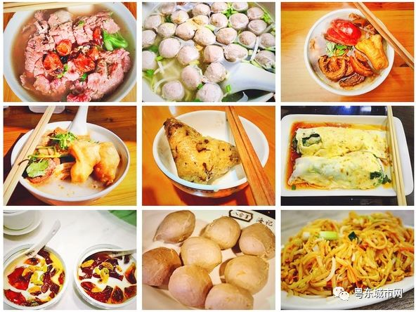

潮汕风味介绍
潮汕菜是粤菜的重要分支，发源于潮汕地区（潮州、汕头、揭阳），以“鲜、甜、清、淡”为核心特色，海鲜料理尤为出众。潮汕菜注重食材本味，烹饪手法精细，擅长白灼、清蒸、小炒、卤制，同时拥有丰富的小吃和功夫茶文化，形成了独具特色的饮食体系。

../images/chaoshan_collection.jpg
点击下方链接，探索潮汕菜的特色菜品和独特饮食文化，感受“食在广州，味在潮汕”的真谛：